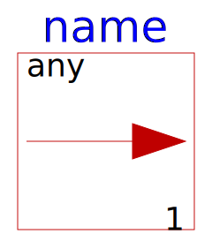
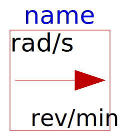
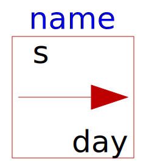
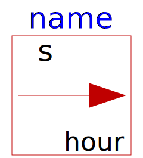
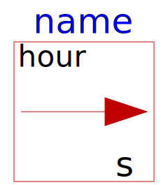
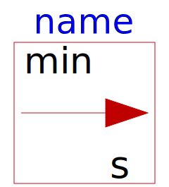
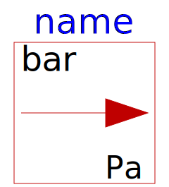

This package provides conversion functions from the non SI Units defined in package Modelica.SIunits.Conversions.NonSIunits to the corresponding SI Units defined in package Modelica.SIunits and vice versa. It is recommended to use these functions in the following way (note, that all functions have one Real input and one Real output argument):
import SI = Modelica.SIunits;
import Modelica.SIunits.Conversions.*;
...
parameter SI.Temperature T = from_degC(25); // convert 25 degree Celsius to Kelvin
parameter SI.Angle phi = from_deg(180); // convert 180 degree to radian
parameter SI.AngularVelocity w = from_rpm(3600); // convert 3600 revolutions per minutes
// to radian per seconds
| Name | Description |
|---|---|
| Type definitions of non SI units | |
|  to_unit1 | Change the unit of a Real number to unit="1" |
| Convert from Kelvin to degCelsius | |
| Convert from degCelsius to Kelvin | |
| Convert from Kelvin to degFahrenheit | |
| Convert from degFahrenheit to Kelvin | |
| Convert from Kelvin to degRankine | |
| Convert from degRankine to Kelvin | |
| Convert from radian to degree | |
| Convert from degree to radian | |
|  to_rpm | Convert from radian per second to revolutions per minute |
| Convert from revolutions per minute to radian per second | |
| Convert from metre per second to kilometre per hour | |
| Convert from kilometre per hour to metre per second | |
|  to_day | Convert from second to day |
| Convert from day to second | |
|  to_hour | Convert from second to hour |
|  from_hour | Convert from hour to second |
| Convert from second to minute | |
|  from_minute | Convert from minute to second |
| Convert from cubic metre to litre | |
| Convert from litre to cubic metre | |
| Convert from Ampere hours to Coulomb | |
| Convert from Coulomb to Ampere hours | |
| Convert from Watt hour to Joule | |
| Convert from Joule to Watt hour | |
| Convert from Joule to kilo Watt hour | |
| Convert from kilo Watt hour to Joule | |
| Convert from Pascal to bar | |
|  from_bar | Convert from bar to Pascal |
| Convert from kilogram per second to gram per second | |
| Convert from gram per second to kilogram per second | |
| Convert from Hz to rad/s | |
| Convert from rad/s to Hz | |
| Convert from square metre to square centimetre | |
| Convert from square centimetre to square metre | |
| This icon will be removed in future Modelica versions. |